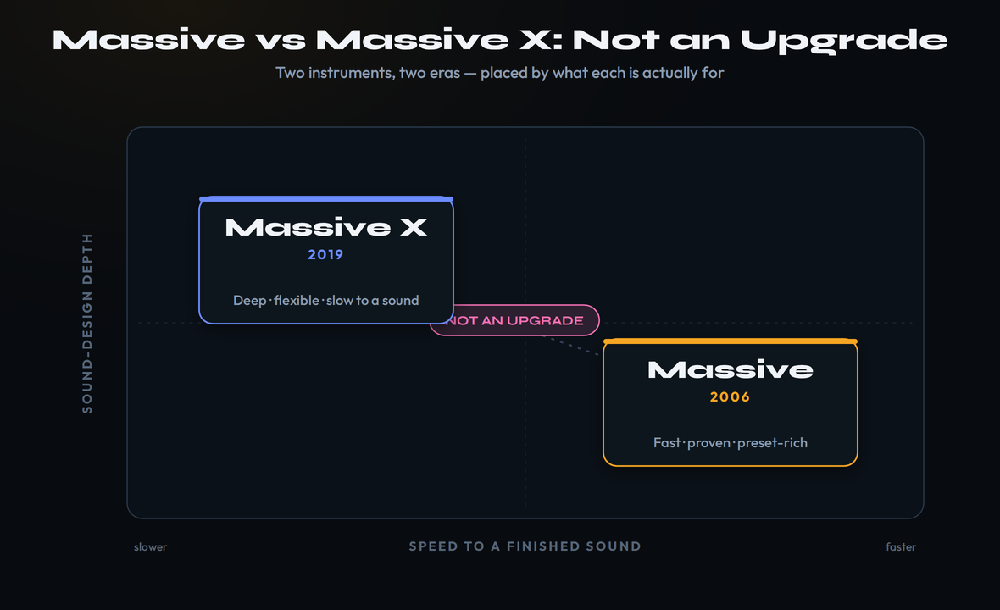

The 30-second verdict
This is not an upgrade decision. The original Massive (2006, $99) is a fast, immediately usable workhorse with the deepest preset ecosystem in bass music; Massive X (2019, $199) is a deeper, more flexible sound-design engine that also shipped half-finished and spent years in slow-update limbo. They came from the same company and share a name, but one is built for speed-to-sound and one is built for sound-design ceiling. Both now sell standalone and come inside Komplete, and you can audition the modern engine for free with Massive X Player. For most producers chasing finished tracks rather than patches, the $99 original is still the right answer in 2026. Reach for Massive X when the bottleneck you actually hit is routing depth, not speed.
Stop Calling It an Upgrade
Search “Massive vs Massive X” and you’ll get the same lazy take five times over: the new one has a bigger number after the name, so buy the new one. It is the single most common mistake producers make about these two synths, and it costs people both money and momentum. Massive X is not Massive 2. It is not a remaster, a port, or a drop-in replacement with the same workflow and more headroom. It is a different instrument with a different philosophy, built by a different team a full thirteen years later, and a huge share of the producers who bought it on release went straight back to the original. That is not nostalgia. It is a rational response to what the two synths actually are.
Here is the honest framing nobody puts up front. The original wavetable Massive arrived in late 2006 and rewrote the rules — astonishing sound quality, a novel use of wavetables, a clear semi-modular layout, and enough immediacy that you could load it, scroll a preset, twist two knobs and have a finished bass in under a minute. It spawned dubstep, it spawned a thousand copycat synths, and almost two decades later it is still on more producer hard drives than any of them. One longtime KVR reviewer summed up the place it holds: violinists have their Stradivarius, guitarists have their Strat, and producers have Massive. Massive X, by contrast, is the “next-generation” flagship Native Instruments built to define the next decade of synthesis — deeper, more flexible, far more complex, and far slower to get a sound out of.
So the real question is not “which is newer” or even “which is better,” because better depends entirely on what you’re trying to do. The real question is the one this guide is built to answer: do you want a proven, fast workhorse, or a deep modern sound-design lab? Answer that honestly — about your actual workflow, not the workflow you wish you had — and the $100 difference between them decides itself. We’ll line up the engines, the workflow, the preset reality and the update history, then score it and tell you exactly who should load which.

Two Engines, Two Eras
Under the hood, these synths share a family resemblance and almost nothing else. The original Massive is a wavetable-and-virtual-analog hybrid with three wavetable oscillators, a clean fixed signal path, two filters, a bank of inserts and effects, and a modulation section that is powerful but lives inside a fixed architecture. Its genius is constraint: there is exactly one sensible way to route most things, the layout never changes, and that predictability is why you can build a sound in it without thinking about the synth at all. The famous “Scream” filter, the flexible insert routing, and the one-click Randomize button are the kind of features that reward muscle memory rather than study. Drop a square-ish wavetable into oscillator one, detune oscillator two a few cents for width, route an envelope to the filter and an LFO to the wavetable position, and you have a moving, mix-ready bass before you’ve made a single architectural decision — the synth simply doesn’t give you enough rope to get lost, and that is by design.
Massive X throws the fixed path out. It gives you two main wavetable oscillators drawing on a library of more than 170 wavetables, each readable through a menu of modes — Gorilla, Hardsync, Formant and more — that fundamentally change how the table is scanned, so a single wavetable becomes a dozen different timbres depending on the mode. On top of that sit phase-modulation oscillators for FM-style metallic and bell tones, insert oscillators you patch in through the effects path, two dedicated noise modules, and a new generation of filters with names like Asimov, Creak and Groian alongside a comb filter for physical-modeling flavors. The routing is free: you decide where signal goes, you stack oscillators in series or parallel, and you build the architecture per patch instead of accepting a fixed one.
Then there is the modulation, which is where Massive X genuinely leaves the original behind. Its modulation sources are first-class citizens you route anywhere, and two features have no equivalent in the 2006 synth. Performers are programmable, tempo-synced modulation sequences — rhythmic shapes you draw and trigger, so movement becomes a composed, musical pattern rather than a plain LFO sweep. The Tracker maps modulation to incoming MIDI in flexible ways. Together they make Massive X a machine for evolving, generative, never-quite-repeating textures — exactly the material the original struggles to reach. If your sounds need to move in complex, rhythmic, designed ways, this is the real reason to choose the newer engine.
But notice what that depth costs, because it is the whole trade. Everything that makes Massive X more capable also makes it slower and harder. The original’s three oscillators and fixed path mean there is almost nothing to decide before you’re making sound; Massive X’s free routing, read modes, insert oscillators and Performers mean there is a great deal to decide, and every decision is a small tax on momentum. For a sound designer that tax buys freedom. For a producer trying to finish a track on a Tuesday night, it buys friction. Hold that tension in your head; it is the spine of every section that follows.
Speed vs Depth: The Real Divide
If you only remember one difference between these two synths, make it this one: the original Massive is fast, and Massive X is deep, and those two virtues pull in opposite directions. The original was designed in an era when a synth had to be immediately legible, and it shows. Every control is on a flat, well-labeled surface; the signal flows left to right the way you’d expect; and the preset browser is built so you can audition a hundred basses in a minute and grab the one that’s closest, then tweak. The whole instrument is optimized for the most common real-world task — find a sound near what you want and finish it — and almost nothing about it asks you to stop and think about the synthesizer.
Massive X optimizes for the opposite task: building a sound from raw intention, with total control over how it’s constructed. That is a worthy goal and the payoff is real, but the cost shows up the moment you open it. The interface is dense, the routing is hidden behind a learning curve, and even sympathetic reviewers have called its UI a problem child — powerful, but never quite finished, and never quite easy. Six years after release, you still cannot import your own wavetables into it, a limitation that would be unthinkable in a synth pitched as a flexible sound-design platform and one the community has complained about for years. The result is a synth that rewards patience and study, and quietly punishes anyone who just wants to work.
This is why so many producers who bought Massive X on launch drifted back to the original. It wasn’t that the new engine sounded worse — it can sound extraordinary — it’s that the original got them to a finished sound faster, and finishing is the thing that actually matters. There is a real psychological cost to a synth that makes you design when you wanted to play. If you are the kind of producer who loves the design process, who happily spends an evening patching a single evolving texture, Massive X’s depth is a gift and you will resent the original’s limits. If you are the kind who wants the synth to disappear so the song can happen, the original is not a compromise — it is the better tool, full stop.
There is a middle path worth naming, and it’s the one a lot of working producers actually take. They keep the original Massive as the fast workhorse for basses, leads and the ninety percent of patches that need to happen quickly, and they open Massive X deliberately, in a dedicated session, when a track needs one of those evolving Performer-driven textures the original can’t make. That isn’t indecision; it’s using each instrument for the job it’s genuinely best at. We’ll come back to it in the verdict, because for a meaningful share of readers the honest answer is not “one or the other.”
Presets and the Ecosystem Moat
Here is the factor the spec sheets never weigh properly, and the one that quietly decides the matchup for most people: the original Massive’s preset ecosystem is the largest in the history of soft synths, and that is a moat Massive X has never come close to crossing. The original ships with over 1,300 factory sounds, but the factory library is the small part. Because Massive defined bass music for fifteen years, there is an almost bottomless supply of third-party preset packs, free banks, signature artist soundsets, and tutorials built around it — an entire cottage industry of sound designers who make and sell Massive patches, and YouTube full of “recreate this drop in Massive” walkthroughs. When a sound is in your head and you don’t want to build it, the odds that someone has already made a Massive preset for it are extraordinarily high.
That ubiquity compounds in a way that’s easy to underrate. If you collaborate, the producer you’re working with probably has Massive and can open your project. If you follow a tutorial, it’s probably demonstrated in Massive. If you buy a sample-and-preset pack for a genre, it probably includes Massive patches. The synth’s twenty-year head start has made it a kind of shared language in electronic music, and a shared language is worth a great deal when you’re trying to learn fast or work with other people. None of that shows up in a feature comparison, and all of it is real.
Massive X’s library tells the opposite story. Native Instruments curates official Massive X Expansions — genre packs of professionally designed presets, from melodic bass to cinematic atmospheres — and they are high quality. But the third-party economy around it is a fraction of the original’s, and the broken wavetable import actively suppresses the part of preset culture that matters most for a wavetable synth: sharing custom tables. A synth you can’t feed your own wavetables into is a synth other people can’t fully build a content economy around. So while Massive X has more kinds of synthesis, the original has vastly more ready-made sounds — and for a producer who works mostly from presets, that is the difference that lands every single day. It also quietly lowers the floor on learning: when nine out of ten sounds you want already exist as a Massive patch made by someone better than you, you spend your time studying how those patches are built rather than reinventing them from scratch, and you improve faster for it.
Where does that leave the sound itself? Closer than the eras suggest. The original is famous for a particular character — aggressive, crystalline, immediate, the sound of a generation of reese basses and neuro growls — and it still does that better and faster than almost anything. Massive X can be cleaner, more modern, and more organic when you build for it, and its read modes and filters reach timbres the original simply cannot. Neither is a sonic loser. But the original’s sound arrives instantly and the modern one’s arrives after work, and for the way most people make music, instant wins more sessions than it loses.
Maintenance Mode: The Update Question
An honest comparison has to talk about how these two synths have been treated since release, because it’s where Massive X has paid for its ambition. At launch in June 2019, Massive X shipped conspicuously unfinished — missing envelope visualizations, missing features promised in the marketing, and feeling to many like a public beta of a flagship. Native Instruments’ own launch copy promised the synth would “grow, adapt, and evolve with regular free updates.” The reality was a first patch a few months in, and then a long, conspicuous silence: years where the only Massive X updates were compatibility fixes for new operating systems, with no meaningful new features. The community read settled into a single phrase — maintenance mode — and it wasn’t unfair.
Things have moved more recently. Version 1.5 finally added a new multi-compressor effect after the long quiet stretch; version 1.6 brought a free update and, notably, spun out the free Massive X Player; and version 1.7 exposed all parameters to host automation and improved the morphing tools. That’s genuine, welcome progress, and it suggests the synth isn’t abandoned. But the headline limitation that has dogged it from day one — you still can’t import wavetables, six years on — remains unfixed, and a buyer in 2026 should weight the development history honestly: this is a flagship that has been slow and uneven, not one on a steady, confidence-inspiring cadence.
The original’s update story is almost the inverse, and it’s the quiet advantage that keeps it on so many drives. Native Instruments has kept Massive working — consistent compatibility updates across operating systems and DAW changes — without ever needing to add features, because the synth was finished and right the first time. There is something to be said for an instrument that has been stable, reliable and unchanged for fifteen years: you never relearn it, it never breaks your old projects, and it loads the same patch the same way it did a decade ago. Stability is a feature, and the mature synth has it in abundance. For a working producer, that reliability has a real, unglamorous value: the patch you saved in a project two years ago opens identically today, the synth never demands a relearn after a major update because there are no major updates, and you will never lose an evening to a flagship that changed its routing out from under you.
The CPU and system picture follows the same logic. The original is light and rock-solid on any modern machine; it was built when computers were slow, so it sips resources by today’s standards and almost never misbehaves. Massive X is heavier — it’s a deeper engine doing more — and it carries one hard requirement worth knowing before you buy: it needs an Intel processor with AVX support or an Apple Silicon Mac running through Rosetta 2, and it does not run in standalone mode at all, only as a plugin inside a DAW. Neither will trouble a current computer badly, but the original is the safer bet on an older or weaker machine, and it’s the one less likely to throw you a compatibility surprise.
The Verdict: Two Scores, One Honest Pick
Here’s the call this whole guide has been earning. Massive X is the more capable instrument; the original Massive is the better buy for most producers. Massive X takes engine depth and modulation decisively — read modes, free routing, Performers and a Tracker the original can’t touch. The original takes immediacy, the preset ecosystem, the interface, stability and value, several of them in a landslide. Score them holistically and the original edges ahead overall — not because it does more, but because what it does, it does faster, cheaper and more reliably, and that combination wins more real sessions than raw ceiling does.
The scores worth defending are the ones that move the verdict. On engine depth, Massive X’s 9.3 against the original’s 8.4 is the widest honest gap on the card in the modern synth’s favor, and it’s the whole reason Massive X exists: two oscillators with ten read modes, phase-mod and insert oscillators, and free routing is a genuinely deeper machine. On immediacy, the original’s 9.3 against Massive X’s 7.7 is nearly as wide the other way, because speed-to-sound is the original’s entire legend and Massive X’s friction is its most-cited flaw. Value lands 9.2 to 8.3 because $99 against $199 for a faster, more immediately useful synth is not close, and the free Player means you can taste the modern engine before spending anything. The two axes I’ve flagged amber are each synth’s soft spot: the original’s fixed-architecture modulation at 8.3, and Massive X’s overwhelming interface at 7.4 — the place each instrument most clearly gives ground.
| Spec | Massive | Massive X |
|---|---|---|
| Released | Late 2006 | June 2019 (latest v1.7) |
| Architecture | Wavetable / virtual-analog hybrid, fixed path | Dual wavetable + phase-mod + insert osc, free routing |
| Oscillators | 3 wavetable oscillators | 2 wavetable (170+ tables, multi read modes) + phase-mod + IFX osc + 2 noise |
| Filters | Multimode incl. the “Scream” filter | New models: Asimov, Creak, Groian, comb |
| Modulation | Powerful, fixed architecture | Free routing + Performers + Tracker |
| Wavetable import | — | Not supported (6 years on) |
| Factory presets | 1,300+ · huge third-party ecosystem | Curated NI Expansions · smaller third-party |
| Standalone app mode | Plugin (in DAW) | Plugin only · requires AVX / Rosetta 2 |
| Free trial path | Demo | Massive X Player (free, Komplete Start) |
| Price | $99 standalone · also in Komplete | $199 (loyalty from $149) · also in Komplete 26 |
| Verdict | 9.0 — the proven, fast value pick | 8.6 — the deeper modern lab |
Specs and prices verified June 27, 2026 against Native Instruments’ current product and pricing pages and 2025–26 coverage (native-instruments.com; MusicRadar Synth Week 2026, Synth Anatomy, MusicTech, Bedroom Producers Blog, KVR, Equipboard). Prices are USD list; Komplete tier and sale pricing vary. Community criticisms (UI, update cadence, wavetable import) are reported sentiment, not first-party measurements.
Read the verdict as a portrait of two different bets, not a leaderboard. Weight raw capability and Massive X “wins,” and the gap closes or inverts in your mind; weight speed, stability, ecosystem and money and the original takes it clearly. The scorecard puts every axis side by side so you can weight them for your own work rather than taking ours.
| Axis | Massive | Massive X |
|---|---|---|
| Sound engine depth | 8.4 | 9.3 |
| Immediacy / speed-to-sound | 9.3 | 7.7 |
| Preset library & ecosystem | 9.4 | 8.2 |
| Modulation power | 8.3 | 9.2 |
| UI / learning curve | 9.0 | 7.4 |
| CPU & stability | 9.0 | 8.0 |
| Value | 9.2 | 8.3 |
| Overall | 9.0 | 8.6 |
How You Actually Get Each in 2026
The acquisition paths matter more than they used to, because there are now four of them and they change the math. Start with the one that costs nothing: Massive X Player is free, bundled in Native Instruments’ free Komplete Start suite. It launched in 2025 as a stripped-back version of the flagship — sixty presets, the free Bass Music Essentials Expansion, and three creative tools (a Morpher XY pad for blending presets, an Animator for rhythmic movement, and a per-corner Randomize) — but it deliberately locks away the full engine: no advanced routing, no custom oscillator modes, no deep modulation. It is a genuinely useful instrument and, more importantly, the smartest way to decide this whole question. Download it, live with the Massive X sound for a week, and you’ll know whether the deep engine is calling you before you spend a cent.
From there the ladder climbs. The original Massive sells standalone for $99 directly from Native Instruments — still available, still updated for compatibility, with a demo if you want to try before buying. Massive X sells standalone for $199, with loyalty pricing from $149 if you already own qualifying NI products. And then both synths live inside Komplete 26, Native Instruments’ bundle, which starts at $549 for the Standard tier and runs to $1,249 for Ultimate and $1,949 for the Collector’s Edition — all of which include Massive X plus a vast library of other instruments and effects. If you want one synth, buy it standalone; if you want a whole studio’s worth of tools and the synths come along for the ride, the bundle is the better value per plugin.
The honest planning advice: don’t buy Massive X to “upgrade” from the original — they coexist, and many owners keep both. If money is the constraint, the $99 original plus the free Player covers an enormous amount of ground for a hundred dollars, and you can add the full Massive X later if the Player convinces you the deep engine earns its place. If you were going to buy a big bundle anyway, you already own Massive X through Komplete and the only question left is whether the $99 original is worth adding for its speed and ecosystem — and for most working producers, it is.
![An acquisition ladder showing the four ways to get these synths in 2026, climbing by price: Massive X Player free in Komplete Start as the try-the-engine path; the original Massive at ninety-nine dollars standalone as the fast workhorse; Massive X at one hundred ninety-nine dollars standalone, loyalty from one forty-nine, as the deep lab; and Komplete 26 from five forty-nine to nineteen forty-nine for Standard, Ultimate and Collector's Edition, all of which include Massive X plus a full studio of instruments](../images/massive-vs-massive-x-acquisition-m.png)
Who Should Load Which
Strip away the nuance and the recommendations are crisp. If you make bass-led electronic music — dubstep, drum and bass, riddim, neuro, electro, festival EDM — and you want to finish tracks, get the original Massive for $99. It is faster to a usable sound than anything in its lane, it has the deepest preset library and tutorial culture of any synth alive, and it does the aggressive, immediate sound those genres are built on better and quicker than the newer engine. Spending more to go slower is solving a problem you don’t have.
If you’re a sound designer, an ambient or cinematic producer, or anyone whose finished tracks are mostly evolving texture and movement — choose Massive X, and budget the time to learn it. The read modes, free routing and especially the Performers are exactly the tools for designed, generative, never-repeating sound, and that depth is a genuine ceiling the original can’t reach. The friction that costs a track-finisher momentum is, for you, the price of admission to a deeper instrument — and a fair one.
If you’re a beginner, start with the free Massive X Player, then buy the $99 original. The Player teaches you the modern morphing workflow at zero cost and zero risk; the original teaches you classic, legible subtractive and wavetable synthesis on the clearest interface in the category, with an ocean of tutorials to follow. That combination — free modern toy plus cheap, deep, well-documented classic — is the best hundred-dollar synth education available, and it leaves the full Massive X as an upgrade you can make later if and when you actually need it.
![A decision flowchart for choosing which Native Instruments synth to load: first ask whether your tracks live on evolving, generative texture and movement — if yes, choose Massive X for its Performers and free routing; if no, ask whether you mostly work from presets and want speed to a finished sound — if yes, get the original Massive at ninety-nine dollars for its ecosystem and immediacy; if unsure, start with the free Massive X Player to audition the modern engine before spending, with owning both as the move once the original's fixed routing limits you](../images/massive-vs-massive-x-decision-m.png)
Which One for Your Genre
Genre is the fastest shortcut to the right pick, because it tells you immediately whether you’ll lean on speed or on designed movement. Dubstep, riddim, drum and bass, neuro and bass house: the original Massive, comfortably. This is the genre it built, the preset and tutorial ecosystem is overwhelmingly Massive-shaped, and the aggressive, instant character of the original is the sound itself. Massive X can make these sounds, but you’ll fight the interface to do what the original does in seconds.
Festival EDM, big-room, future bass, trap, pop and hip-hop: still the original for most producers. These genres run on supersaw leads, plucks, stabs and clean wavetable basses — exactly the fast, immediate territory the original owns — and the money you don’t spend goes toward samples, a vocal chain or a second synth that genuinely expands your palette. Reach for Massive X here only if you specifically want unusual, designed textures inside an otherwise conventional track.
Ambient, cinematic, scoring, IDM, experimental and organic electronic: Massive X, and it’s not especially close. These are the genres built on evolving atmosphere, generative movement and organic-synthetic hybrids — precisely what Performers, the comb filter and the read modes exist to make. If your finished tracks are mostly texture rather than hooks, the depth that slows a track-finisher down is the depth you’ll use every session.
Trance, techno, house, melodic and progressive: a real toss-up that comes down to taste. The original handles the basses, plucks and rolling leads of these styles without complaint and gets you there fast; Massive X’s evolving modulation flatters deeper, more atmospheric, more cinematic takes on the same genres. One last cross-genre note: the two layer beautifully because their characters differ — stack the original’s crisp, immediate tone over a Massive X texture underneath, and you get clarity on top and organic movement beneath. If you end up owning both, treat it as a two-color palette, not redundancy. When in doubt in any genre, start with the free Player, and let the sound you can’t make in the original be the thing that finally opens your wallet.
Practical Exercises
- Download Massive X Player from Native Instruments’ free Komplete Start bundle and load it on an empty track.
- Scroll the sixty presets, then spend ten minutes only on the Morpher — drag across the XY pad and let the Animator add rhythmic movement. Notice how much motion you get with no LFO setup at all.
- Ask yourself one honest question: did the evolving, morphing sound excite you, or did you wish you could just grab a finished bass? Your answer is the whole Massive-vs-Massive X decision in miniature.
- Pull up three reference tracks you wish you could make. For each, name the core synth sound: is it an immediate bass, lead or pluck, or an evolving, generative texture that changes over time?
- Tally them. If most are immediate, preset-style sounds, the original Massive already covers you and gets you there fastest.
- If two or more lean on designed, moving, never-repeating texture, you’ve just found the job Massive X’s Performers and free routing exist for — and your answer.
- In the original Massive, build a growling reese bass from an init patch: detuned wavetable oscillators, a notched filter on an LFO, a little Scream-filter drive. Time yourself to a finished, mix-ready sound.
- Now build the closest equivalent in Massive X using its oscillators, a new-model filter and a Performer for movement. Time that too.
- Compare both the time and the result. The minutes saved in the original is the value of immediacy; the extra movement and ceiling in Massive X is the value of depth. Decide, for your music, which number matters more.